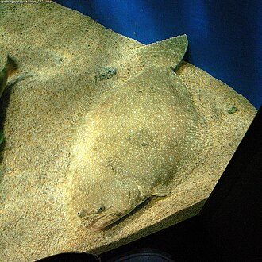

養殖ひらめの生産量 都道府県ランキング
全7都道府県の順位と収獲量
養殖ひらめの収獲量が全国で最も多いのは大分県で、418 tです。全国（1,570 t）の27%を占めます。

| 順位 | 都道府県 | 収獲量 | 全国に占める割合 |
|---|---|---|---|
| 1位 | 大分県 | 418 t | 27% |
| 2位 | 愛媛県 | 267 t | 17% |
| 3位 | 鹿児島県 | 176 t | 11% |
| 4位 | 長崎県 | 148 t | 9.4% |
| 5位 | 宮崎県 | 116 t | 7.4% |
| 6位 | 熊本県 | 33 t | 2.1% |
| 7位 | 鳥取県 | 4 t | 0.3% |
養殖ひらめの生産量の推移（令和2年〜令和6年）
全国の収獲量は、令和2年の1,790 tから令和6年の1,570 tへ、12%減りました。期間中、1位は一貫して大分県です。
| 年 | 全国 | 1位 | 2位 | 3位 |
|---|---|---|---|---|
| 令和6年 | 1,570 t | 大分県418 t | 愛媛県267 t | 鹿児島県176 t |
| 令和5年 | 1,722 t | 大分県467 t | 鹿児島県278 t | 愛媛県261 t |
| 令和4年 | 1,842 t | 大分県503 t | 鹿児島県374 t | 愛媛県269 t |
| 令和3年 | 1,711 t | 大分県528 t | 愛媛県270 t | 鹿児島県264 t |
| 令和2年 | 1,790 t | 大分県536 t | 鹿児島県369 t | 愛媛県243 t |
この数字について
- 分類：鰈の仲間
- 全国の収獲量：1,570 t
- この数字が表すもの：収獲量（養殖による収獲量）
- 調査：海面漁業生産統計調査（海面養殖業） 令和6年
- この品目は養殖の統計です。
- 7県分を調査（調査していない県は順位に入りません）
養殖ひらめの生産量について、よくある質問
- 養殖ひらめの生産量が日本一の都道府県はどこですか？
- 大分県です。海面漁業生産統計調査（海面養殖業）（令和6年）で418 tでした。
- 養殖ひらめの生産量ランキング2位・3位はどこですか？
- 2位は愛媛県（267 t）、3位は鹿児島県（176 t）です。
- 養殖ひらめの生産量ランキング4位・5位はどこですか？
- 4位は長崎県（148 t）、5位は宮崎県（116 t）です。養殖ひらめの全7県の順位は上の表のとおりです。
- 養殖ひらめの全国の生産量はどれくらいですか？
- 1,570 t（令和6年）です。